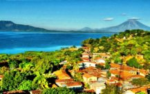
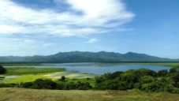
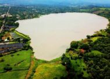
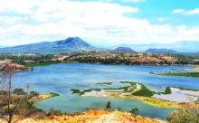
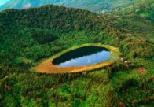

|
Lagunas de El Salvador son lugares encantadores donde la magia del ambiente natural está presente, el turismo se pone de manifiesto en estos lugares donde la diversión y la cultura se encuentran en un mismo lugar. Lagunas salvadoreñas están llenas de mucho misterio y la mayoría forman parte del legado cultural de El Salvador, porque encierran en ellas diversas leyendas que se cuentan a los visitantes y de las cuales quedan encantados. Estos cuerpos de agua dulce de poca o mediana extensión se forman casi siempre por la desembocadura de ríos, nacimientos a su alrededor o por las características del terreno que permite la acumulación de aguas lluvias. Por lo anterior, en el país se encuentran más lagunas que lagos. Las lagunas además son una parte importante para la vida en los ecosistemas acuáticos, ya que en ellos crecen diversos tipos de peces y también se encuentran muchas aves que apreciar. La laguna de Olomega es el mayor cuerpo de agua dulce de la zona oriental de El Salvador. Su extensión es de 24,2 km². Está ubicada a 15 km al sudeste de San Miguel. Es alimentada y drenada por el Río Grande de San Miguel. Aquí encontrarás más información sobre estos encantadores lugares para que puedas disfrutar al máximo del turismo en El Salvador. |
|  |  |  |  |
| Laguna de Olomega | Laguna El Jocotal | Laguna El Espino | Laguna de Metapán |
|  | |||
| Laguna Verde | |||